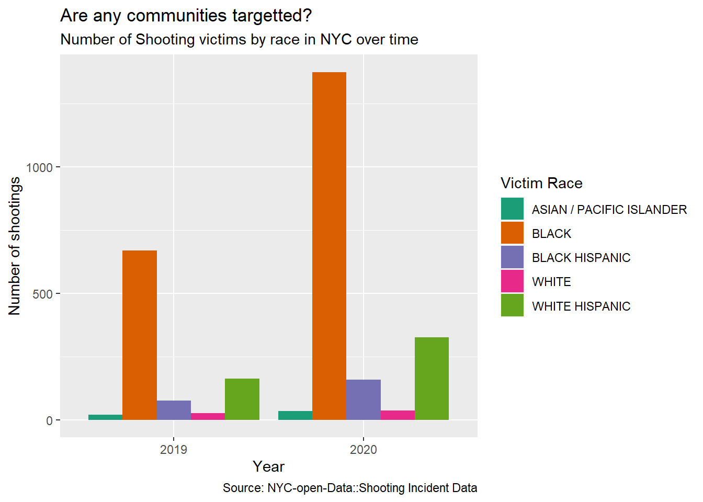
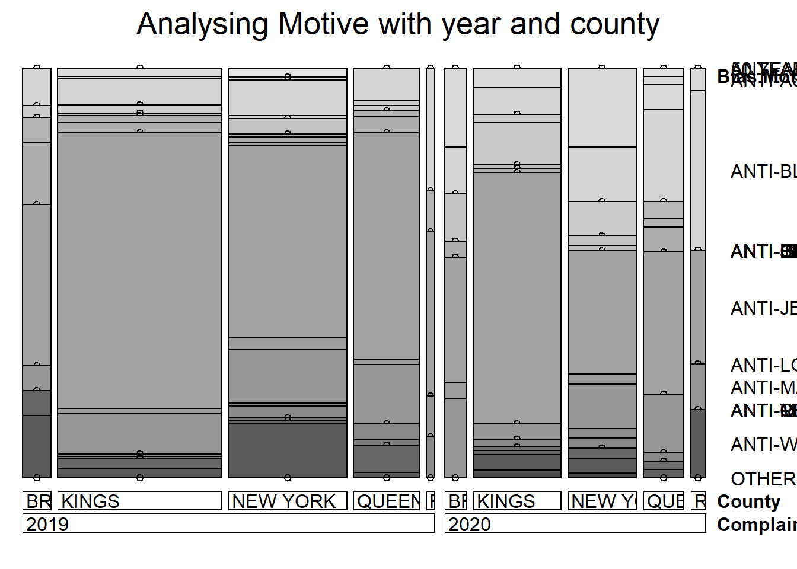
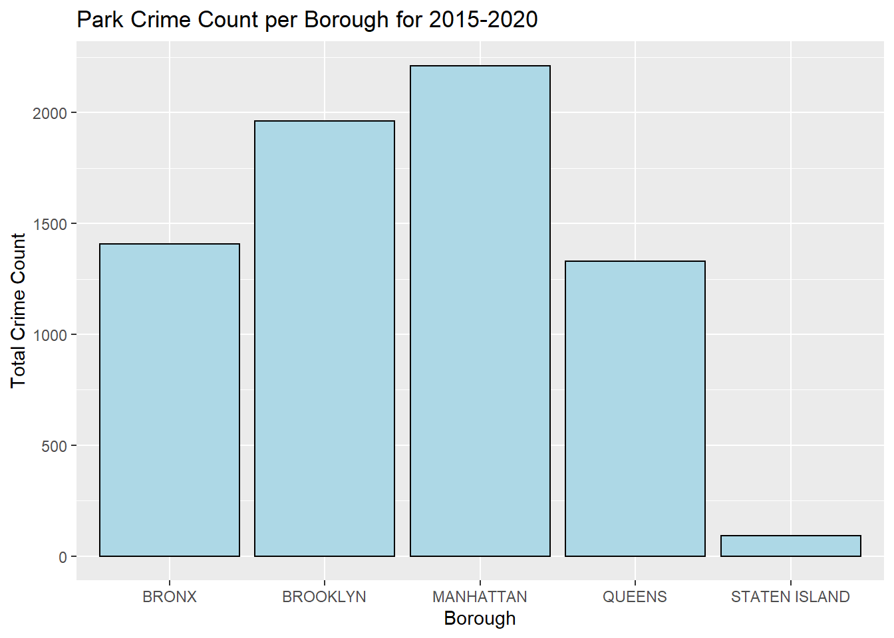
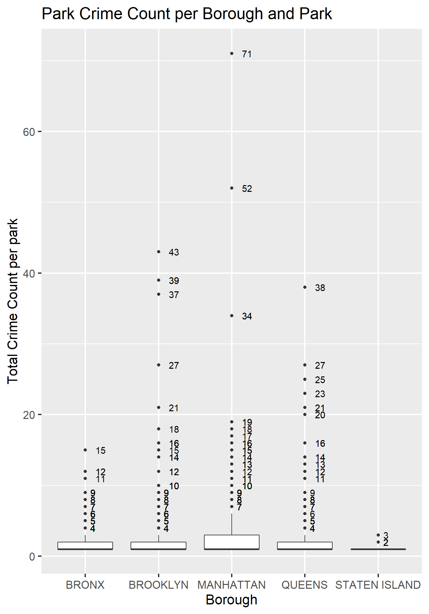

Chapter 5 Results
5.1 Shootings in NYC
5.1.1 Monthly Trend in number of shootings

- The number of shootings have clearly gone up after covid (blue line).
- Also, We see a trend increase in the number of shootings in the middle of the year which comes down in winter.

- We see every year in the month of May and June the number of shootings rise from previous month.
- Last year, (possibly due to covid restrictions easing up) saw 92-95% increase in these months.
5.1.2 Hot-spot neighbourhoods/AREAS
5.1.2.1 Number of shootings in different borough every month

- This graph tells us, staten island is at an all time low in the number of shootings, relatively.
- Also, Brooklyn and Bronx have the most number of shootings which peaked duing the month of july in 2020.
5.1.2.2 Percentage Change in number of shootings in different boroughs

- This faceted graph gives us a deeper dive in just the numbers to explain that even though total number of shootings has been at an all time high in Brooklyn and Bronx, The recent numbers have started to decrease. can be due to active action taken by authorities or better awareness.
- Also, in case of Staten island, the behavior is very erratic, hinting at a more loose control than other boroughs.
5.1.3 Weekly Trend in number of shooting

- This graph shows that irrespective of the day of the week it is almost equally like for a shooting to be there.
5.1.4 Trend in number of deaths

- The number of shootings lead to death increases from April to June and least every year in March.
5.1.5 Susceptible groups
5.1.5.1 Victims by Age
- There are multiple deductions from the above graph:
- The most widely affected age group is the 25-44 age group.
- Brooklyn and Bronx have the highest shootings.
5.1.5.2 Victims by Gender

- The data on number of female victims in shootings is less but among them, brooklyn has the highest in the past 2 years.
- In general, we see a clear increase in the number of shootings post covid (blue-line)

- This visualization confirms that more men are involved in shootings than women.
- Also, that the number has significantly risen post COVID.
5.1.5.3 Victims by Race

- We observe that different communities are effected more in some boroughs than others.
- White people do not show up almost everywhere except in the occasional shootings in the Staten island borough.
- Pacific Islanders are vicitimized in queens the highest.
- White Hispanics and Black hispanics are targeted in Bronx.
- Black in Brooklyn.

- From just the numbers we see that the Black and White Hispanic people appear the most as victims across whole of New York.
5.2 Human Trafficking
5.2.1 Data By State

5.2.1.1 Alternative visualization

Please note:
- The following regions were missing and their values are set to 0: Pennsylvania, California, Alabama, Iowa, New York, District of Columbia.
5.3 NYPD Arrests
5.3.1 Most Common Arrest Offenses
The first question we are looking to answer here is what are the most commons type of offenses as seen by NYPD.

From the above plot, Assault, Felony Assault, Larceny, Drugs among others are the most common offenses seen in New York.
5.3.1.1 Most Common Arrest Offenses By Sex
We also wish to identify the sex of the perpetrators committing these common offenses.

The above plot follows a similar trend when it comes to the perpetrator’s sex. However some offenses see an increase in the ratio of Female offenders to Men. These crimes include Criminal Mischief, Grand Larceny and offenses against public administration, among others.
5.3.2 Assault Offenses by Borough
It is also important to identify crime rates by Borough to see which regions of New York are most affected by these crimes. Here we are focusing on assault related crimes since these are most prevalent in NYC.

It is seen that Bronx and Brooklyn are most affected by Assault related offenses, whereas Staten Island is least affected. A basic cause for this could be assumed to be population of these boroughs but it is important to note here that while population decreases in the following order: Brooklyn, Queens, Manhattan, Bronx, Staten Island, this is not the trend of assault crimes.
5.3.3 Offenses by Borough and Age Group
We try to further drill down among the NYC boroughs to understand if perpetrator age plays a role in these statistics.

The above plots show a similar trend across Boroughs with a majority of perpetrators belonging to the 25-44 age group. However it is important to note here that except for Manhattan, the number of perpetrators belonging to the 18-24 category are more than those belonging to 45-64 age group.
5.3.4 Identifying race of perpetrators by Borough
It can also be valuable to know if there is a trend in perpetrator race for each borough.

The majority of perpetrator race seen here is Black, followed by White Hispanic. However it is important to note some other points as well:
- State Island sees a similar distribution of Black as well as White perpetrators
- Queens has a larger share of perpetrators belonging to Asian community
- The Bronx has a very small percentage of perpetrators who are White. On the contrary, Black Hispanic is a more common group.
5.3.5 Drugs based crimes in NYC

5.3.5.1 Drug Based Crimes Density by Location

5.3.6 Sexual Crimes
An important aspect of crime analysis is understanding trends in sexual crimes and what areas are they more frequent in.

The above location based scatter plot shows the spread in location where sexual crimes tend to occur. To get a clearer picture, we plot the below density curve.
5.3.6.1 Sexual Crimes Frequency by Location

This plot identifies certain locations which tend to have a higher frequency of sexual crimes in NYC.
5.4 Hate Crimes
5.4.1 Is there a certain county that is particularly bad when it comes to hate crimes?

Kings County (Brooklyn) had the highest total number of hate crimes over the years 2019 and 2020. This was followed by New York (Manhattan) and then Queens.
The only county/borough to have experienced an upturn in hate crimes in 2020 was the Richmond county (Staten Island Borough).
This is confirmed by articles such as (Source: silive.com https://www.silive.com/crime-safety/2021/04/staten-island-was-the-only-borough-in-nyc-with-an-increase-in-hate-crimes-in-2020-why-where-were-they-crime-analysis.html)
5.4.2 What kinds of offense are particularly prevalent in different counties?

The largest proportion of hate crimes stem from religious reasons, followed by race and sexual orientation.
Kings County (Brooklyn) has a much larger proportion of these religious crimes. Interestingly, although the total number of hate crimes is greater in Kings County (Brooklyn) than New York County (Manhattan), the number of crimes stemming from Sexual Orientation and Race/Color is greater in New York County than Kings County.
5.4.3 Motives Count

Anti- Jewish hate crimes seem to be the largest in number (by a large amount, almost 350 crimes) during this time period, followed by anti-homosexual (gay) and anti-black crimes.
5.4.4 What are the bias motives?

As expected from the previous 2 graphs, Kings County (Brooklyn) has the highest number of anti-jewish crimes. Kings County has a disproportionately large number of these crimes, whereas other motive types like anti-black or anti-homosexual seem to be equal in the boroughs of Kings and New York (Manhattan).
These insights are confirmed by articles such as (https://www.cbsnews.com/news/nypd-to-increase-presence-in-brooklyn-after-string-of-anti-semitic-hate-crimes/ Source: CBS News)
5.4.5 Has the distribution of crimes changed over the years?

Across the city of New York, the number of hate crimes went down in 2020 (by almost 40%). Sexual orientation crimes decreased, whereas crimes based on race/color unfortunately went up in number.
5.4.6 Does the month have an influence on the number of crimes?

Across both years, it is visible that there is a dependence on the month when it comes to the number of crimes.
However, for all months, 2020 had lower number of hate crimes than there were in 2019. The highest crime number for both years was in the month of March.
5.4.7 Year vs Bias Motive vs County

The insights from this mosaic plot corroborate our findings from the previous plots.
5.4.8 When do suspects get arrested? (If at all?)

The majority of arrests, if made, were made within 50 days since the report creation, for both the years 2019 and 2020. This indicates a heavy right-skew in the graphs.
Only very few arrests were made beyond the 50-day mark in both years.
5.4.9 How do the police view these?

Criminal Mischief, Aggravated Assault and Aggravated Harrassment were the most code of hate crimes committed.
5.5 Drugs
5.5.1 Arrests related to all drugs throughout US

5.5.1.1 Insights: all drugs
The number of drug related arrests across the United States peaked around the years 2005-2007 over the entire course of 1994 - 2016.
The lowest number of drug-related arrests were during 1994. The high number of drug related arrests coincides with the
A large portion of the arrests related to upturn in drug-related arrests could be due to the raids detailed in articles such as: https://www.justice.gov/archive/usao/nye/pr/2005/2005dec7.html. In addition, this could also be because of the setting up of the Digital Evidence Laboratory by the Drug Enforcement Administration. (Source: https://en.wikipedia.org/wiki/Drug_Enforcement_Administration)
5.5.2 Arrests related to manufacture and possession

5.5.2.1 Insights: Manufacturing vs Possession
As seen in the graph, the number of arrests in relation to manufacturing of drugs has seen a downward trend, where the number of arrests in relation to possession of drugs has seen an upward trend.
It is unclear whether the trends are due to a decrease in the manufacturing or due to other factors such as ineffectual police techniques.
Similarly, the upward trend in the possession arrests of drugs could be due to either in increase in drug consumption or better police techniques to find such people to arrest, or both.
5.5.3 Arrests related to Manufacturing

5.5.3.1 Insights: Manufacturing Insights
The trends seen in the manufacture of these drugs is highly interesting. It is seen that the arrests related to opioid manufacture have seen a sharp downturn in the 1994-2016 period.
In contrast, other drug-related arrests have been on the upturn, including marijuana, synthetic drugs and other drugs.
5.5.4 Arrests related to Possession

5.5.4.1 Insights: Drug Possession Arrests
As can be seen from the scale of the graph, it is evident that the number of arrests due to drug possession are higher than the number of arrests in connection with drug manufacturing.
In correlation with the manufacturing downtrend of opioid, the number of arrests for possession of opioid has also seen a downtrend.
Again, similar to the manufacturing uptrend for other drugs such as marijuana or synthetic, the number of arrests have also been increasing during the 1993-2016 timeframe.
5.5.5 Arrests as a proportion of population

5.5.5.1 Insights: Population Proportion
It is seen that there is a downward trend in the proportion of the us population arrested in connection to drugs. This could be due to the fact that the population growth has outstripped the number of drug manufacturers/possessors over this time frame (since it was seen that arrests have been on the increase during this timeframe).
5.6 Park Crime Data
5.6.1 Crimes in Park by borough

Manhattan and Brooklyn parks have a particularly high count of total crimes over the 6 years. Staten Island parks have the lowest incidence of total crimes.
5.6.2 Parks with High Crime
Any parks causing particularly large amounts of trouble (amongst parks with non-zero crime occurrence)?

Thankfully, up to the 3rd quantile of parks ie 75% of parks in all boroughs have had 0 crimes over 6 years. Some parks in Manhattan and Brooklyn are particularly unsafe, however, and have particularly high incidence of crime in the years from 2015-2020.
Three parks in Manhattan have caused problem in particular, with incidences of 71, 52, and 34 crimes each. While the highest number of crimes in a Brooklyn or Queens park is lower than the corresponding Manhattan number, the number of parks with greater than 20 crimes in total over the past 6 years in Brooklyn and Queens is greater than the number of Manhattan parks with greater than 20 crimes.
5.6.3 Park Size and Crime
What effect does park size have on the occurrence of crime?

We see here a very distinct dependence of crime on the park size. We see that crime occurs almost exclusively in the large parks.
Hence, clearly, parks that have larger sizes have higher incidence of crime. Large Manhattan and Brooklyn parks have the highest incidence of crime. Large Bronx and the Queens have identical incidence of crime.
As parks get smaller, the incidence of crime drastically reduces across all boroughs. Playgrounds less than one acre have a few occurrences of crime, but interestingly, we see that the dependance on borough drastically reduces with crime occurences being low and almost equal across boroughs.
This could suggest that criminals specifically target certain parks for organized or planned crime, something that does not occur in the smaller parks.
5.6.4 Trends of different kinds of crime over the years

We see interesting patterns emerge in the type of park crimes occurring in different boroughs.
In the Bronx, Robbery is the most common crime type, followed by Felony Assault and Grand Larceny. Brooklyn and Manhattan follow similar distributions to each other, with Felony Assault being the most frequent, followed by Robbery and Grand Larceny. In Queens, felony assault and robbery happen to be roughly equivalent in their occurrence.
Interestingly, a lot of parks in the boroughs of Manhattan, Brooklyn and Queens saw an uptick in felony assault in 2016. Manhattan, however, had an extremely high occurrence of felony assault in 2017. Most boroughs have had either decreasing/stable park crime rates since 2017.
Staten Island, even though it has the fewest parks, also has the smallest number of crimes by a large margin.
5.6.5 Time Analysis of Park Crimes
Are the total number of park crimes in each borough increasing or decreasing over the years?

Following upturns in the park crime rate in the year 2016, there has been a slight drop in the crime rates in Queens and the Bronx.
However, Manhattan and Brooklyn saw an increase in park crime rates till 2017, followed by a slight increase in Manhattan and slight decrease in Brooklyn. Following this, the park crime occurrence has remained stable.
5.6.6 Further Analysis of Crime Type, Borough and Park Type

The insights from this alluvial diagram corroborate the findings from the previous plots. Manhattan and Brooklyn account for the most park crimes while large parks make up a very large percentage of the crime occurrence.